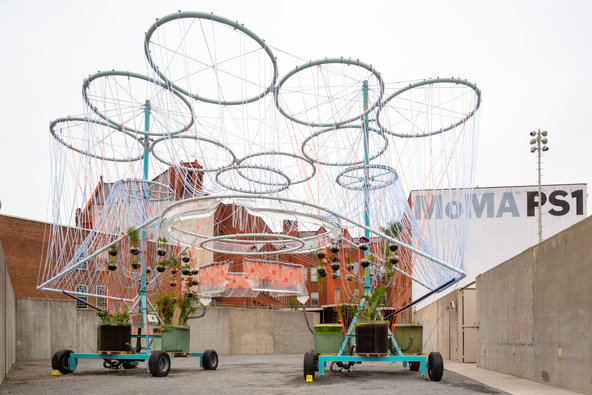

The United Nations has predicted that by 2025, two-thirds of the world will lack sufficient water supply. It was this statistic that inspired the architect Andrés Jaque to develop “Cosmo,” his design for an outdoor installation which this past February earned first place in MoMA’s 16th annual Young Architect Program. The competition’s rules stipulate that submissions must integrate a sustainability element, and as the founder of the boutique design agency Office for Political Innovation, Jaque is no stranger to using his work to catalyze discussion. “Architecture has been very iconic over the last decade, so people can recognize it easily,” Jaque says. “But I wanted to make the way we deal with water recognizable. I took this opportunity to show that making our lives compatible with other things is not necessarily a punishment, but can be something enjoyable.”
Each year, the Young Architect Program’s winner gets to bring his or her work to life as an installation that resides in MoMA PS1’s courtyard for the summer. Open to the public as of today, “Cosmo” is built with concentric loops of irrigation components, integrates aquatic plants and can purify 3,000 gallons of water every four days. “We’re dealing with so many things — plants, water, pumps, structure, sensors,” Jaque says. “The amount of different technology and living materials that we put together is very diverse. It took a kind of courage, this huge amount of difficulty.”
Jaque's design incorporates aquatic plants and can purify water - Credit Pablo Enriquez
Only once construction began did Jaque truly understand the complexity of his undertaking, and how water conservation intersects with so many different worlds. For example, he explains, consider the aquatic plants: “We found this one company in Long Island City, S. Scherer & Sons, that had been selling these plants for 100 years, this amazing family business that is the most important place in the country for aquatic plants. It was difficult, however, for our engineers to work with them, because each one speaks a different language. But this is what architecture should be about: articulating different traditions, understanding different wisdoms.”
“Cosmo” will serve as a backdrop for PS1’s popular Warm Up summer concert series, and Jaque hopes it will provide something greater than just shade from the summer sun or Instagram fodder. “Leisure is an opportunity for architecture; leisure is not disengagement, but a celebration that can also engage people with politics,” he says. “‘Cosmo’ is a way to make very public and transparent what I think is most interesting about architecture right now. It was really beautiful to empower the possibility of water projects, so we can reach more people and therefore become something of a political tool.”
“Cosmo” is on view through Sept. 7 at MoMA PS1, 22-25 Jackson Avenue, Queens, momaps1.org